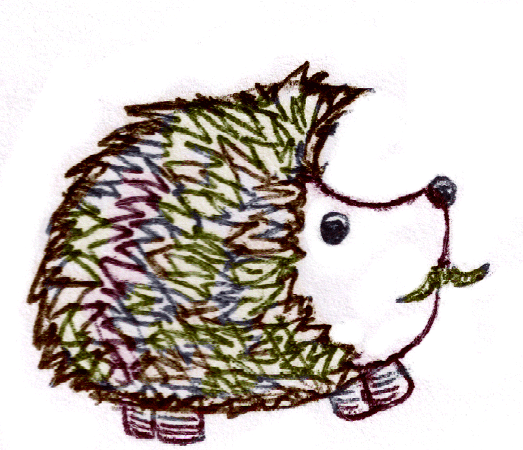
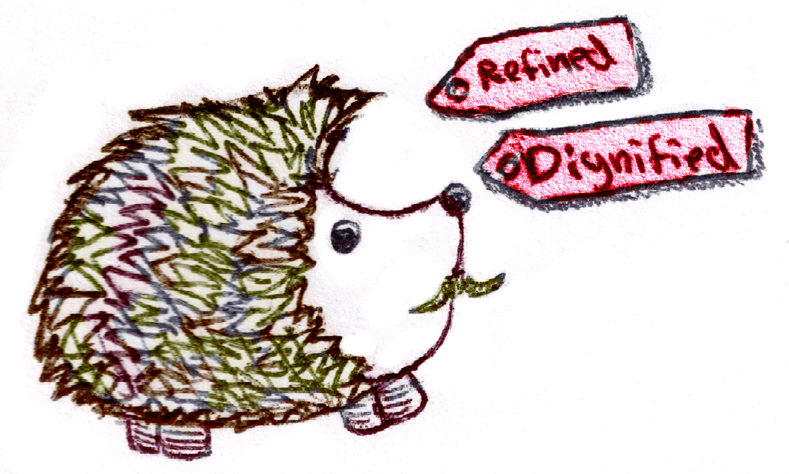
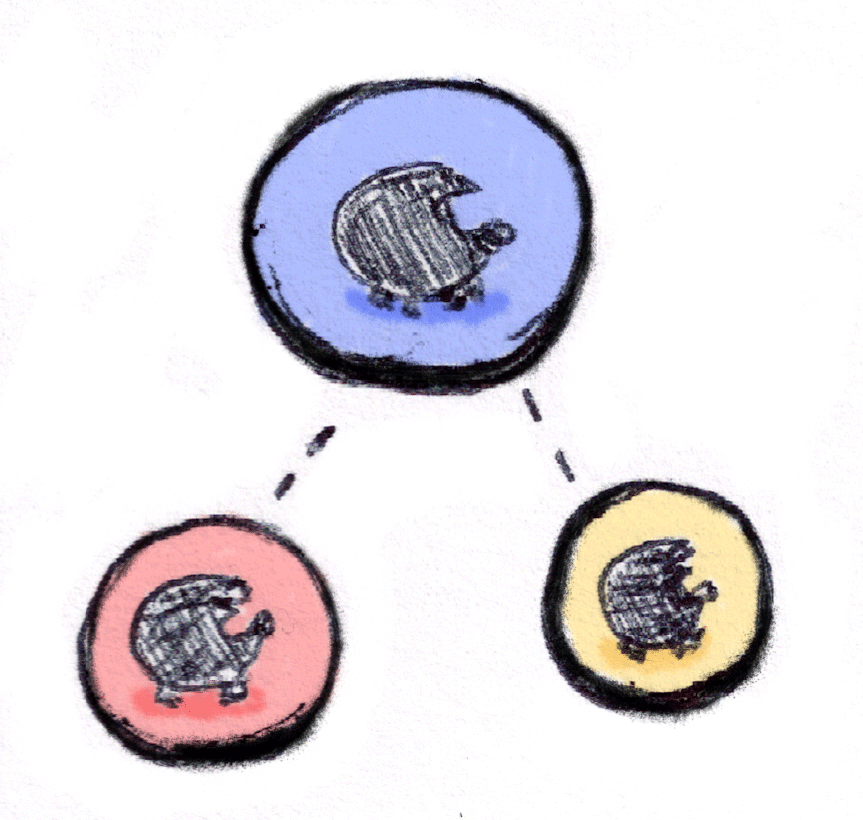
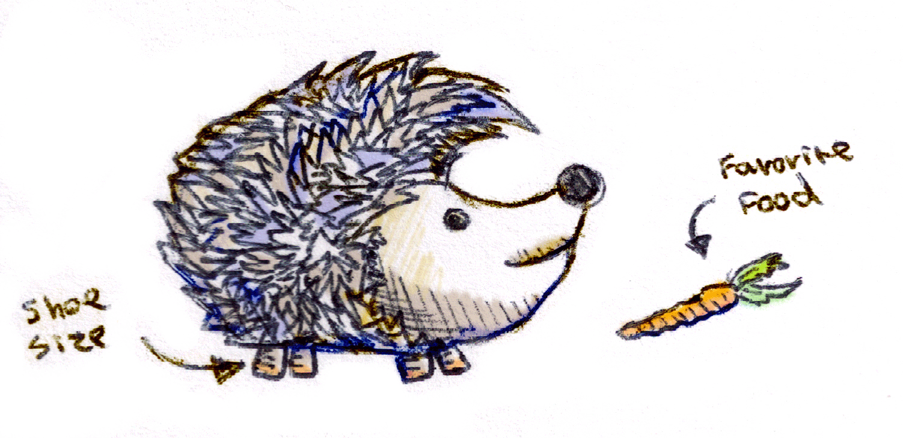

I have been a full stack engineer at LiquidPlanner for 5 years.
* Seattle
Online project management with probabilistic scheduling.
For each topic, we'll cover the SQL before we cover its use in ActiveRecord.
We will use Postgres 9.x, Ruby 1.9 syntax, and ActiveRecord 4.0.
If you understand the SQL you can use it in any version of ActiveRecord, 4.0 just makes it easier.
You just built a great new social network for hedgehog lovers around the world, HedgeWith.me.
Everything is going well. You have a few users, but now they want more.

My hedgehog is afraid of grumpy hedgehogs, but likes cute ones how can I find him friends? hedgehogs4life
People want to be able to tag their hedgehogs, and then find other hedgehogs with certain tags.

CREATE TABLE hedgehogs (
id integer primary key,
name text,
age integer,
tags text[]
);
create_table :hedgehogs do |t|
t.string :name
t.integer :age
t.text :tags, array: true
end
ActiveRecord 4.x introduced arrays for Postgres, use array:true
Define array columns as t.text instead of t.string to avoid casting.
Postgres assumes that ARRAY['cute', 'cuddly'] is of type text[] and will require you to cast, otherwise you will see errors like this:
ERROR: operator does not exist: character varying[] && text[]
You can use the set operators to query arrays.
A @> B A contains all of BA && B A overlaps any of BFind all the hedgehogs that are spiny or prickly:
SELECT name, tags FROM hedgehogs
WHERE tags && ARRAY['spiny', 'prickly'];
A && B A overlaps any of B
| name | tags |
|---|---|
| Marty | spiny, prickly, cute |
| Quilby | cuddly, prickly, hungry |
| Thomas | grumpy, prickly, sleepy, spiny |
| Franklin | spiny, round, tiny |
Find all the hedgehogs that are spiny and prickly:
SELECT name, tags FROM hedgehogs
WHERE tags @> ARRAY['spiny', 'prickly'];
A @> B A contains all the B
| name | tags |
|---|---|
| Marty | spiny, prickly, cute |
| Thomas | grumpy, prickly, sleepy, spiny |
Find all the hedgehogs that are spiny and prickly
Hedgehog.where "tags @> ARRAY[?]", ['spiny', 'prickly']
Create scopes to encapsulate set operations:
class Hedgehog < ActiveRecord::Base
scope :any_tags, -> (* tags){where('tags && ARRAY[?]', tags)}
scope :all_tags, -> (* tags){where('tags @> ARRAY[?]', tags)}
end
Find all the hedgehogs that are spiny or large, and older than 4:
Hedgehog.any_tags('spiny', 'large').where('age > ?', 4)
Hi, I run an influential hedgehog club. Our members would all use HedgeWith.me, if they could show which hogs are members of our selective society. Boston Spine Fancy President
Apparently there are thousands of hedgehog leagues, divisions, societies, clubs, and so forth.

We need to efficiently model a club hierarchy like this:
How can we support operations like finding a club's depth, children, or parents?
Encode the parent ids of each record in its path.
CREATE TABLE clubs (
id integer primary key,
name text,
path integer[]
);
| id | name | path |
|---|---|---|
| 1 | North American League | [1] |
| 2 | Eastern Division | [1,2] |
| 4 | New York Quillers | [1,2,4] |
| 5 | Boston Spine Fancy | [1,2,5] |
| 3 | Western Division | [1,3] |
| 6 | Cascadia Hog Friends | [1,3,6] |
| 7 | California Hedge Society | [1,3,7] |
...
The depth of each club is simply the length of its path.
array_length(array, dim) returns the length of the arraydim will always be 1 unless you are using multidimensional arrays.
Display the top two tiers of hedgehog clubs:
SELECT name, path, array_length(path, 1) AS depth
FROM clubs
WHERE array_length(path, 1) <= 2
ORDER BY path;
array_length(path, 1) is the depth of record
| name | path | depth |
|---|---|---|
| North American League | [1] | 1 |
| Eastern Division | [1,2] | 2 |
| Western Division | [1,3] | 2 |
| South American League | [9] | 1 |
Find all the clubs that are children of the California Hedge Society, ID: 7.
SELECT id, name, path FROM clubs
WHERE path && ARRAY[7]
ORDER BY path
A && B A overlaps any of B
| id | name | path |
|---|---|---|
| 7 | Californian Hedge Society | [1,3,7] |
| 8 | Real Hogs of the OC | [1,3,7,8] |
| 12 | Hipster Hogs | [1,3,7,12] |
Apparently it is illegal to own hedgehogs in California
Find the parents of the California Hedge Society, Path: ARRAY[1,3,7].
SELECT name, path FROM clubs
WHERE ARRAY[id] && ARRAY[1,3,7]
ORDER BY path;
A && B A overlaps any of B
| id | name | path |
|---|---|---|
| 1 | North American League | [1] |
| 3 | Western Division | [1,3] |
| 7 | Californian Hedge Society | [1,3,7] |
With ActiveRecord 4.x, path is just ruby array.
class Club < ActiveRecord::Base
def depth
self.path.length
end
...
Encapsulate these conditions as instance methods:
class Club < ActiveRecord::Base
def children
Club.where('path && ARRAY[?]', self.id)
end
def parents
Club.where('ARRAY[id] && ARRAY[?]', self.path)
end
Now we have an easy way to query the hierarchy.
@club.parents.limit(5)
@club.children.joins(:hedgehogs).merge(Hedgehog.any_tags('silly'))
These features can all work together.
Mind blown?
I need to keep track of my hedgehogs' favorite foods, colors, weight, eye color, and shoe sizes! the Quantified Hedgehog Owner
If I am forced to enter my hedgehog's shoe size, I will quit immediately! the Unquantified Hedgehog Owner
Your users want to record arbitrary data about their hedgehogs.

Hstore provides a hash column type. It is a useful alternative to ActiveRecord's serialize where the keys and values can be queried in Postgres.
Hstore needs to be installed manually. Your migration will look like this:
class InstallHstore < ActiveRecord::Migration
def up
execute 'CREATE EXTENSION hstore'
end
...
Although hstore is supported by ActiveRecord 4.x, the default schema format does not support extensions.
Update config/application.rb to use the SQL schema format, otherwise your tests will fail.
class Application < Rails::Application
config.active_record.schema_format = :sql
end
CREATE TABLE hedgehogs (
id integer primary key,
name text,
age integer,
tags text[],
custom hstore DEFAULT '' NOT NULL
);
hstore is supported in ActiveRecord 4.x as a normal column type:
create_table :hedgehogs do |t|
t.string :name
t.integer :age
t.text :tags, array: true
t.hstore :custom, :default => '', :null => false
end
Save yourself some hassle, and specify an empty hstore by default:
t.hstore :custom, :default => '', :null => falseOtherwise new records will have null hstores.
Hstore uses a text format, it looks a lot like a ruby 1.8 hash:
UPDATE hedgehogs SET
custom = '"favorite_food" => "lemons", "weight" => "2lbs"'
WHERE id = 1;
Be careful of quoting.
Common functions and operators:
defined(A, B) Does A have B?A -> B Get B from A. In ruby this would be A[B]Find all the favorite foods of the hedgehogs:
SELECT name, custom -> 'favorite_food' AS food
FROM hedgehogs WHERE defined(custom, 'favorite_food');
defined(A, B) Does A have B?
A -> B Get B from A. In ruby this would be A[B]
| name | food |
|---|---|
| Horrace | lemons |
| Quilby | pasta |
| Thomas | grubs |
Create scopes to make querying easier:
class Hedgehog < ActiveRecord::Base
scope :has_key, -> (key){ where('defined(custom, ?)', key) }
scope :has_value, -> (key, value){ where('custom -> ? = ?', key, value) }
...
Find hedgehogs with a custom color:
Hedgehog.has_key('color')
Find hedgehogs that are brown:
Hedgehog.has_value('color', 'brown')
Find all the silly, brown, hedgehogs:
Hedgehog.any_tags('silly').has_value('color', 'brown')
With ActiveRecord 4.x, hstore columns are just hashes:
hedgehog.custom["favorite_color"] = "ochre"
hedgehog.custom = {favorite_food: "Peanuts", shoe_size: 3}
Hstore columns are always stored as strings:
hedgehog.custom["weight"] = 3
hedgehog.save!
hedgehog.reload
hedgehog.custom['weight'].class #=> String
Someone commented on my hedgehog. They said they enjoy his beady little eyes, but I can't find it. hogmama73
Your users want to be able to search within their comments.
CREATE TABLE comments (
id integer primary key,
hedgehog_id integer,
body text
);
There are two important data types:
tsvector represents the text to be searchedtsquery represents the search queryThere are two main functions that convert strings into these types:
to_tsvector(configuration, text) creates a normalized tsvectorto_tsquery(configuration, text) creates a normalized tsqueryPostgres removes common stop words:
select to_tsvector('A boy and his hedgehog went to Portland');
-- boy, hedgehog, portland, went
select to_tsvector('I need a second line to fill space here.');
-- fill, line, need, second, space
Stemming removes common endings from words:
| term | stemmed |
|---|---|
| hedgehogs | hedgehog |
| enjoying | enjoy |
| piping | pipe |
Vectors:
V @@ Q Searches V for QQueries:
V @@ (A && B) Searches V for A and BV @@ (A || B) Searches V for A or BFind comments about "enjoying" something:
SELECT body
FROM comments
WHERE to_tsvector('english', body)
@@ to_tsquery('english','enjoying');
V @@ Q Searches V for Q
Notice how "enjoying" also matched "enjoy" and "enjoys" due to stemming.
to_tsquery('english','cat:*') Searches for anything starting with catSuch as: cat, catapult, cataclysmic.
But not: octocat, scatter, prognosticate
Find comments containing the term "oil", and a word starting with "quil" :
SELECT body
FROM comments
WHERE to_tsvector('english', body)
@@ ( to_tsquery('english','oil')
&& to_tsquery('english','quil:*')
);
V @@ (A && B) Searches V for A and B
tsquery only supports wildcards at the end of a term.
While quill:* will match "QuillSwill", but *:swill will not.
In fact, *:swill will throw an error.
Never pass user input directly to to_tsquery, it has a strict mini search syntax. The following all fail:
http://localhost : has a special meaning O'Reilly's Books Paired quotes cannot be in the middleA && B & and | are used for combining termsYou need to sanitize queries, or use a gem that does this for you.
We can wrap this up in a scope.
class Comment < ActiveRecord::Base
scope :search_all, -> (query){
where("to_tsvector('english', body) @@ #{sanitize_query(query)}")
}
You need to write sanitize_query, or use a gem that does this for you.
Find the comments about quill oil again, and limit it to 5 results:
Comment.search_all("quil* oil").limit(5)
Since search_all is a scope, we chain it like all the other examples.
Create an index on the function call to_tsvector('english', body):
CREATE INDEX comments_gin_index
ON comments
USING gin(to_tsvector('english', body));
The gin index is a special index for multivalued columns like a text[] or a tsvector
Since we are indexing a function call, to_tsvector('english', body), we must call it the same way every time.
You don't have to use english, but you do need to be consistent.
You can now enjoy the happy hour!
SELECT * FROM beers WHERE
traits @> ARRAY['hoppy', 'floral']
Possible suggestions:
sanitize_query?Here's sanitize_query:
def self.sanitize_query(query, conjunction=' && ')
"(" + tokenize_query(query).map{|t| term(t)}.join(conjunction) + ")"
end
It breaks up the user's request into terms, and then joins them together.
We tokenize by splitting on white space, &, |, and :.
def self.tokenize_query(query)
query.split(/(\s|[&|:])+/)
end
Each of those tokens gets rewritten:
def self.term(t)
# Strip leading apostrophes, they are never legal, "'ok" becomes "ok"
t = t.gsub(/^'+/,'')
# Strip any *s that are not at the end of the term
t = t.gsub(/\*[^$]/,'')
# Rewrite "sear*" as "sear:*" to support wildcard matching on terms
t = t.gsub(/\*$/,':*')
...
...
# If the only remaining text is a wildcard, return an empty string
t = "" if t.match(/^[:* ]+$/)
"to_tsquery('english', #{quote_value t})"
end